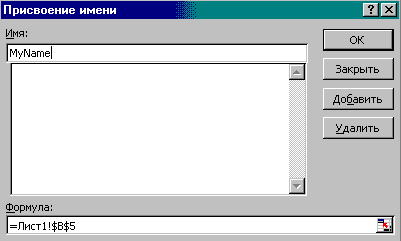
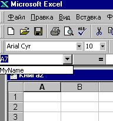

Разобраться с тем, как Excel производит адресацию ячеек и как можно им давать имена, поможет эта статья. Сведения в статье справедливы как для Exel 2003, так и для для Excel 2013, и, видимо, будут справедливы и для последующих версий Excel, так как адресация ячеек - это основа построения всего табличного процессора.
По-умолчанию используется стиль A1. Это когда по строкам используется алфавит, а по горизонтали - цифры. Например, D10 - это десятая строка в колонке D. Есть и стиль называемый R1C1, который наиболее полезен при вычислении позиции строки и столбца в макросах а также при отображении относительных ссылок. В стиле R1C1, после буквы "R" указывается номер строки ячейки, после буквы "C" - номер столбца.
При работе в Excel, стили именования ячеек переключаются в меню Сервис -> Параметры -> Общие -> Стиль ссылок, при реальном программировании наиболее удобно пользоваться не этими стилями, а именами ячеек. Тогда работа с вашей ячейкой похожа на роботу с обычной переменной. Что многим более привычно и удобно. Например для констант или полей форм.
Для того, чтобы дать имя ячейке наведите на неё курсор. Выберите меню Вставка -> Имя -> Присвоить. Появится диалоговое окно, куда надо ввести имя и нажать кнопочку OK.

После присваивания имени вы введите число в эту ячейку, а в другой создайте формулу:
=MyName+10
Данная запись намного информативнее, кроме того вы можете не заботиться о местоположении имени в таблице , можете менять его местоположение не заботясь о том, что Ваши формулы будут изменены. А особенно это важно при программировании. Эта мелочь позволит избежать Вам сложной адресации и отслеживания данных.
Узнать все имена можно здесь:

И здесь так же можно быстро переместиться к ячейке с заданным именем. Выберите её из списка и где бы она не находилась, и вы окажетесь в нужной ячейке.